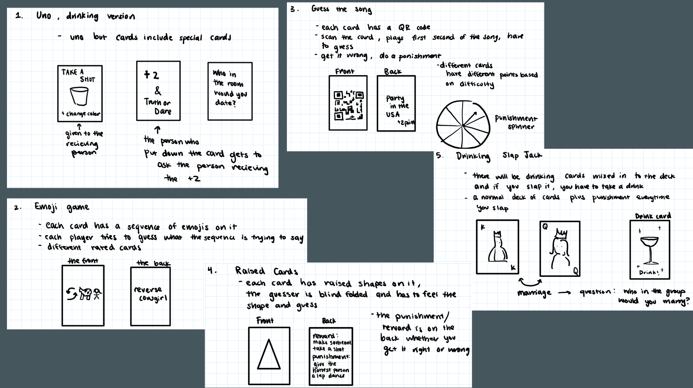

How it started
A group of six classmates, including myself, applied to be a part of this industry project, working closely with Hasbro Senior Vice President, Brian Baker. Our task was to create the next popular adult party game and here's what we came up with.
We started by individually brainstorming pre-existing games that we enjoyed and then coming up with ideas for a new game that we could create, whether it be an original idea or an altered version of another game. We thought a lot about the audience of our game, creating a persona map depicting different types of people who might play. With other constraints in mind, we created a general design brief to outline our goals. Below are those deliverables as well as some of my initial ideas.
After the initial brainstorm, we each shared our ideas and combined elements to decide on our final game.
Prototyping (Pt.1)
We first created a works-like prototype so that we could test the game. We typed up a rough draft of the game play and simply using index cards, a sharpie, and a 3D printed die, our first prototype was complete.

Testing and Evolving
As a group, we played the game and took notes on our thoughts...
Successes:
- We found that the game was entertaining and able to make us laugh
- Rounds of the game weren’t overly long
- Guessing the number wasn’t impossible for the guesser, but also not too easy
Shortcomings:
- Some players took longer to think of an answer, delaying the game
- The team that wasn’t guessing didn’t have anything to do
- Players could use context from previous rounds to guess answers
Changes we made:
- Add more category cards
- Implement a timer system using an hourglass to speed up playing
- Include something for non-guessing team to do while the other team is guessing (a point stealing mechanic)
- New point system so that getting the right answer with less clues means the team gains more points
- Rule to prevent reusing already named items in categories (e.g. preventing someone from saying “apple” if “apple” was already used in a previous round as it would be obvious what number “apple” correlated with)
Prototyping (Pt.2)
We typed up a new draft of the game play with our changes and this time focused a bit more on the design aspect. The box and card designs were created with Adobe Photoshop and the dice and hourglass were 3D printed.
Next Steps
Successes:
- Opposing team is more engaged with point-stealing mechanism
- The core of the game is still fun and fast-paced with the timing system
- More specific categories are helpful
Shortcomings:
- Point system might be over-complicated
- The use of two die is also unnecessary
Changes we plake to make:
- Rethink point system and simplify game play
- Possibly switch type of timer
- Include a spinner instead of a die
We are still meeting with Brian at Hasbro and continuing to work on a third rendition of the game that we plan to pitch to Hasbro soon!